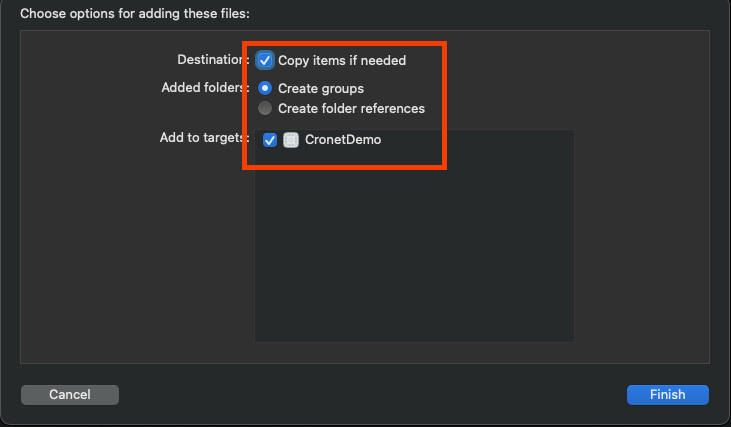
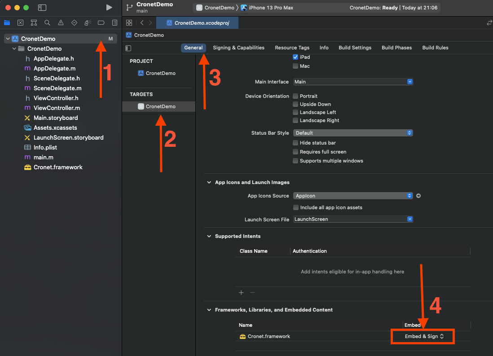

前言
在Android Cronet 构建 中讲了 Android 上 Cronet 的下载、编译、使用。
今天来说一说 iOS 上如何编译与使用。
下载
依旧先来看下 iOS 中如何下载，下载和 Android 一样，我这里直接给出需要执行的指令。
1
2
3
4
git clone https://chromium.googlesource.com/chromium/tools/depot_tools.git
export PATH = " $PATH : $( pwd ) /depot_tools" # 设置环境变量，可以写到 .bashrc 中，这样就不用每次都执行一遍
mkdir ~/chromium && cd ~/chromium
fetch --no-history ios
最重要的是需要配置代理，一个好的代理能省非常多事情。
切换tag
切换分支是我在 iOS 上花费非常多时间才搞定的，再次强调，一个好的代理能省非常多事情。
切换 tag 也和 Android 类似，这里也直接给出需要执行的指令。
1
2
3
4
5
6
7
8
9
10
git fetch origin 95.0.4638.50
git checkout FETCH_HEAD
git switch -c 95.0.4638.50
COMMIT_DATE = $( git log -n 1 --pretty= format:%ci)
cd ~/depot_tools
git checkout $( git rev-list -n 1 --before= " $COMMIT_DATE " main)
export DEPOT_TOOLS_UPDATE = 0 # 禁用 depot_tools 自动更新
cd ~/chromium/src
git clean -ffd # 清空git工作目录，以免发生冲突
gclient sync -D --force --reset --with_branch_heads
在执行 git fetch origin 95.0.4638.50 的时候碰到一直下载不下来的问题，我在这里卡了一个星期。最后用下面这种办法解决的，仅供参考
1
2
3
4
git fetch --unshallow
git fetch origin 95.0.4638.50
git checkout FETCH_HEAD
git switch -c 95.0.4638.50
也就是多执行了一步 git fetch --unshallow ，接下来拉取 95.0.4638.50 就非常快了。
编译
iOS 编译与 Android 大体相同，只是有区分模拟器和真机。
默认编译出来的是给模拟器使用的，如果需要编译给真机使用需要加上 -i 选项，如下所示
真机-Release
1
2
3
cd ~/chromium/src
./components/cronet/tools/cr_cronet.py gn -i -r
ninja -C out/Release-iphoneos cronet_package
-i 的意思就是 iphoneos ，也就是给真机使用的-r 也就是构建 Release 版本，这个和 Android 一样，也可以使用 --release
模拟器
模拟器就不需要加 -i 参数了
1
2
3
cd ~/chromium/src
./components/cronet/tools/cr_cronet.py gn -r
ninja -C out/Release-iphonesimulator cronet_package
使用 cr_cronet.py 的时候不要加 build 参数，会碰到如下错误
1
Error: no mobile provisioning profile found for "org.chromium.gtest.cronet-test".
示例
编译完之后，在 out/Release-iphonesimulator 目录下会有一个 all.xcodeproj 的文件，双击就可以使用 Xcode 打开了。
示例的代码在 src/components/cronet/ios 下，有关 Cronet 的初始化在子目录 cronet_consumer 之中，来看下 Cronet 初始化代码
src/components/cronet/ios/cronet_consumer/cronet_consumer_app_delegate.mm
1
2
3
4
5
6
7
8
9
10
11
12
13
14
15
16
17
18
19
20
21
22
23
24
25
- ( BOOL ) application: ( UIApplication * ) application
didFinishLaunchingWithOptions: ( NSDictionary * ) launchOptions {
[ Cronet setUserAgent : @"Dummy/1.0" partial : YES ];
[ Cronet setQuicEnabled : YES ];
[ Cronet start ];
[ Cronet startNetLogToFile :[ self currentNetLogFileName ] logBytes : NO ];
NSURLSessionConfiguration * config =
[ NSURLSessionConfiguration ephemeralSessionConfiguration ];
[ Cronet installIntoSessionConfiguration : config ];
NSString * chromiumPrefix = @"www.chromium.org" ;
[ Cronet setRequestFilterBlock : ^ BOOL ( NSURLRequest * request ) {
BOOL isChromiumSite = [[[ request URL ] host ] hasPrefix : chromiumPrefix ];
return ! isChromiumSite ;
}];
self . window = [[ UIWindow alloc ] initWithFrame :[[ UIScreen mainScreen ] bounds ]];
self . viewController =
[[ CronetConsumerViewController alloc ] initWithNibName : nil bundle : nil ];
self . window . rootViewController = self . viewController ;
[ self . window makeKeyAndVisible ];
return YES ;
}
由于 cronet 在 iOS 上会对网络请求进行 HOOK 所以之前该怎么用的就怎么用，接入成本就很低了。相比之下 Android 的接入成本就比较高了，因为大部分 Android 的网络请求会使用 OkHttp 或者 Retrofit 而不是 HttpURLConnection 。
使用
看了 cronet 提供的示例，我们也来写一个 Demo 看看。
使用 Xcode 创建一个新项目，然后把编译好的 Cronet.framework 拖动到项目中， Cronet.framework 在 out/Release-iphonesimulator/cronet/Cronet.framework

只放到项目中还不够，还需要在 targets -> General -> Frameworks,Librarys, and Embedeed Content 中找到 Cronet.framework 在 Embed 中改为 Embed & Sign 选项

接下来需要配置 Cronet ，在 AppDelegate.m 中加入如下代码
1
2
3
4
5
6
7
#import <Cronet/Cronet.h>
- ( BOOL ) application: ( UIApplication * ) application didFinishLaunchingWithOptions: ( NSDictionary * ) launchOptions {
[ Cronet setUserAgent : @"CronetDemo/1.0" partial : YES ];
[ Cronet setQuicEnabled : YES ];
[ Cronet start ];
return YES ;
}
接着在 ViewCrontroller.m 中加入网络请求代码
1
2
3
4
5
6
7
8
9
10
11
12
13
14
15
16
17
- ( void ) viewDidLoad {
[ super viewDidLoad ];
[ self loadRequest ];
}
- ( void ) loadRequest {
NSURL * url = [ NSURL URLWithString : @"https://httpbin.org/get" ];
NSURLRequest * request = [ NSURLRequest requestWithURL : url ];
NSURLSession * session = [ NSURLSession sharedSession ];
NSURLSessionDataTask * dataTask = [ session dataTaskWithRequest : request completionHandler : ^ ( NSData * _Nullable data , NSURLResponse * _Nullable response , NSError * _Nullable error ) {
NSLog ( @"response %@" , response );
}];
[ dataTask resume ];
}
执行之后就可以看到在控制台打印了请求的信息。
碰到的错误
1
xcode-select: error: tool 'xcodebuild' requires Xcode, but active developer directory '/Library/Developer/CommandLineTools' is a command line tools instance
在终端中执行如下代之后解决
1
sudo xcode-select -s /Applications/Xcode.app/Contents/Developer
参考